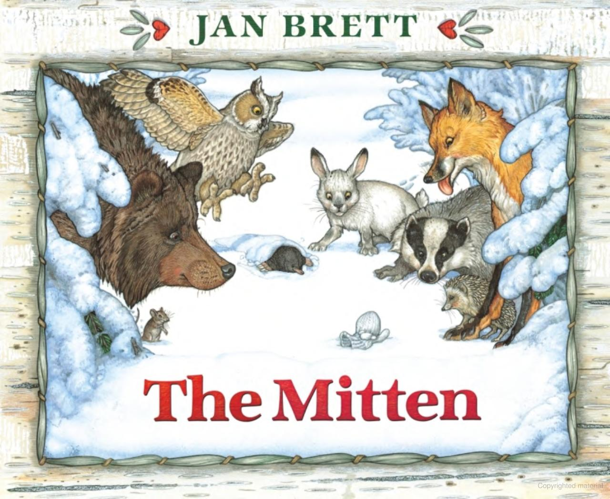
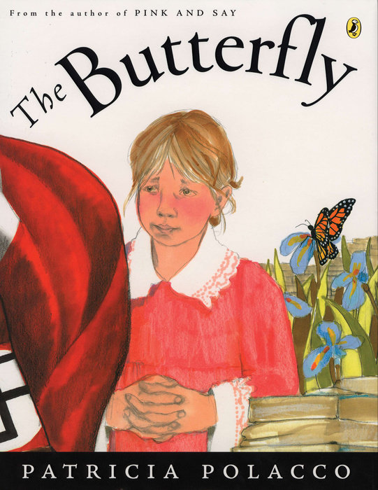
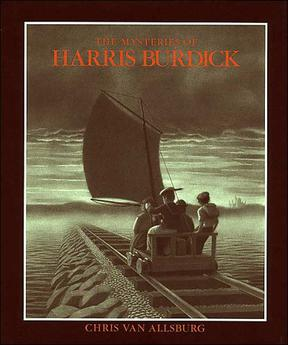

Jan Brett
1853 - 1890
Van Gogh was a Dutch Post-Impressionist painter and considered one of the most famous of the movement. Despite lacking recognition during his lifetime and suffering from both mental illness and financial struggles, his artwork is now renowed worldwide.
I came to know of van Gogh through an art class project in 3rd grade and have since admired his use of color and brush stroke style.
Featured work: "The Starry Night", 1889, Oil paint

Patricia Polacco

Chris Van Allsburg